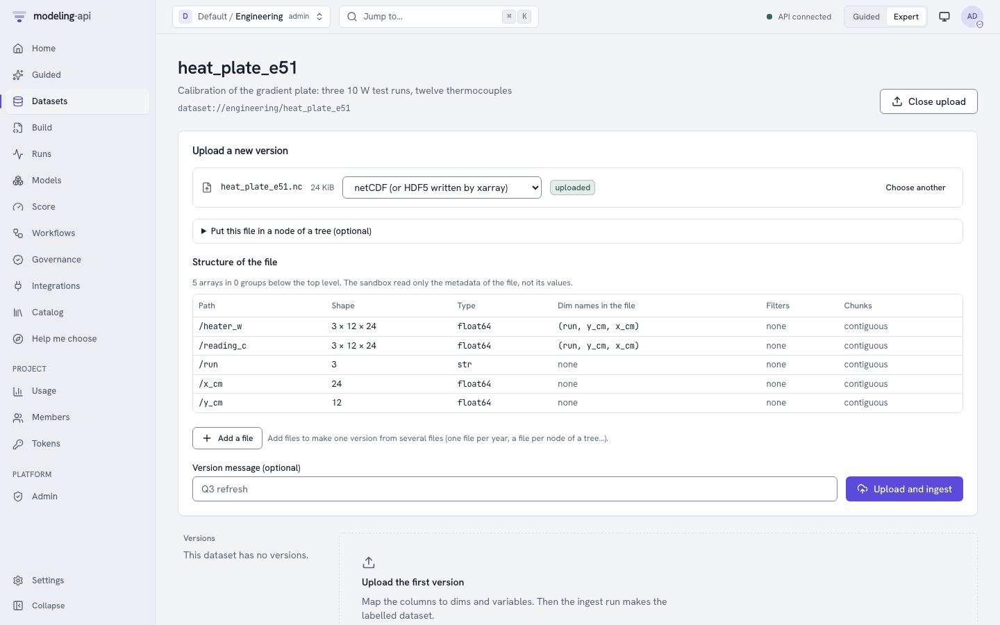
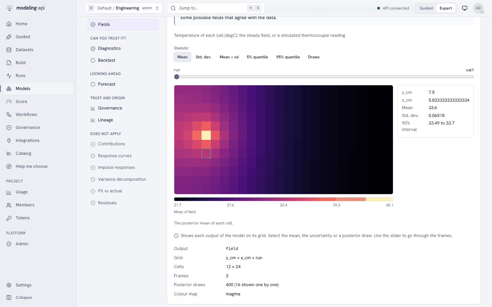

E51 thermal gradient plate design¶
This tutorial does the calibration and the heater design check of the pymc-challenges notebook
E51_heat_equation_design.py in the web app. You use the model sci.heat_plate@1. You do not
write PyMC code.
You need:
- The platform (start it with
make dev) and a project that you can upload datasets to. This tutorial uses the projectengineering. If your project has a different name, change the project part of eachdataset://andmodel://reference, andmetadata.projectin the spec. - The modeling-api repository with its Python environment (
uv). The notebook simulates its data, so you do not need a copy of pymc-challenges. - About 20 minutes. The fit takes about one minute of sandbox time.
1. The question¶
A gradient plate holds a surface at a temperature gradient, not at one temperature. Biologists use it to test seeds or bacteria at many temperatures at the same time. The notebook designs a 40 × 20 cm metal plate in a 20 °C room. Its working area must go from 30 °C at the left to 70 °C at the right, with the same temperature across its width. The working area starts 5 cm from the left and right edges and 3 cm from the long edges.
Heat spreads through the plate and goes out through its faces and edges. The 2-D steady heat equation gives the temperature of each point. But the properties of the plate are not known exactly. Thus the notebook first does a calibration experiment, then designs the heaters for all the plates that agree with the calibration.
The notebook asks these questions:
- What do three test runs with twelve thermocouples tell you about the plate? (Notebook
section 2.) The unknowns are the conductivity
k, the face lossh, the edge lossh_edgeand the heater efficiencyeta. - Where do you put six heaters, and how much power does each heater get? (Notebook section 3.)
- How much do insulation and sensors with feedback help? (Notebook sections 4 to 6.)
The decision of section 3 is this: use the greedy heater layout, not six heaters spaced evenly along the long edges. Over the posterior, the greedy layout is 1.4 °C RMS from the target in the working area. The even layout is 2.0 °C RMS. Both layouts run 2 to 4 °C too warm at the cold end, because no heater can remove heat there.
What you will get, and the notebook section that each item replaces:
| In the web app | Notebook |
|---|---|
The posterior of k, h, h_edge, eta, sigma and spread_length (Parameters, core.posterior_forest, core.pair) |
Section 2, the table of the calibration and the correlations |
The temperature field of each calibration run, with mean, sd and draws (Fields, sci.field_map) |
Section 1, the field of one 10 W heater |
The residual of each thermocouple (sci.image_residuals) |
Section 2, the fit to the readings |
| The predicted field of two heater layouts, with a 90% range for each cell (Score) | Section 3, the comparison of the greedy layout with the even layout |
A recipe that calibrates, tests the calibration on a run that the fit did not see, and then predicts a layout (sci_calibrate_then_design) |
Sections 2 and 3 in one run |
The platform does not search for the best heater layout. You give the layouts, and the model predicts them. See Differences from the notebook.
2. Get the data¶
The notebook simulates its calibration experiment. The export command makes the same
experiment again with the notebook's random generator and seed. Thus the readings are the
same as the notebook's T_cal. Run the command from the root of the modeling-api repository:
uv run python -m mapi_plugin_science.export e51 \
--challenges <path to pymc-challenges>/data \
--out heat_plate_e51.nc --spec heat_plate_e51.yaml
The command ignores --challenges for this case, because E51 has no data file. The command
writes:
wrote heat_plate_e51.nc (variables heater_w, reading_c on run=3, y_cm=12, x_cm=24)
upload it as dataset engineering/heat_plate_e51 and fit sci.heat_plate
wrote the suggested spec to heat_plate_e51.yaml
The file holds one dataset:
| Name | Dims | Type | Meaning |
|---|---|---|---|
run |
3 | categorical, cal1, cal2 and cal3 |
One calibration run with one test heater |
y_cm, x_cm |
12, 24 | float, cm | The centres of the square cells. The step is 1.667 cm |
heater_w |
run, y_cm, x_cm |
float64, W, covariate | The power of the test heater: 10 W in one cell, 0 W in the other cells |
reading_c |
run, y_cm, x_cm |
float64, °C, target | The thermocouple reading. Only 12 cells of each run have a value (36 readings in total). The other cells have no value (NaN) |
The test heaters are at (5.8, 10.8) cm in cal1, (20.8, 5.8) cm in cal2 and (32.5, 14.2) cm
in cal3. The twelve thermocouples are in the same cells in each run. The attribute
mapi_schema gives each variable its role, so you do not map columns.
The names of the dataset and of the model
The dataset uses the names y_cm, x_cm, heater_w and reading_c. The model uses the
names y, x, heater_power and temperature. The data.bind block of the spec in
step 4 connects them.
The simulated data of the model
--synthetic writes a smaller experiment on a 12 × 6 grid with the same true plate. Use it
to try the steps quickly. The numbers in this tutorial are for the notebook's 24 × 12 grid.
3. Upload the dataset¶
- Open Datasets in the sidebar.
- Click New dataset.
- Type
heat_plate_e51in Name. Type a description, for example "Calibration of the gradient plate: three 10 W test runs, twelve thermocouples". - Click Create dataset. The upload panel opens.
- Click Choose files and select
heat_plate_e51.nc. - Click Preview structure. The panel shows Structure of the file. Make sure that it
shows
heater_wandreading_conrun,y_cmandx_cm.

7. Optional: type a message in Version message (optional). 8. Click Upload and ingest.When the ingest run is done, the version page shows the tabs Schema, Coordinates,
Missingness, Preview and About. On Schema, reading_c has the role target and
heater_w the role covariate. Missingness shows that most cells of reading_c have no
value. This is correct: a cell without a thermocouple has no measured value, and the model uses only
the 36 readings.
The file is one plain dataset. You do not need the tree fields ("Put this file in a node of a tree (optional)") or the HDF5 path.
4. Build the spec¶
- Open Build and click New spec. The editor opens with the geo MMM template.
- Set the Editor view to YAML.
- Open the Insert panel on the right.
- Open the Datasets section and select
heat_plate_e51. The toast "Dataset set" shows. - Type
heatin the search field. Under Models, select Temperature of a heated plate (sci.heat_plate@^1). The toast "Model set" shows. - Select all the text in the editor and paste the full spec below. The template has other blocks (a pipeline, a split and the MMM plots), so the spec must replace all of it.
- Click Validate. The status shows
valid. - Click Save spec. The spec gets its name
heat-plate-e51frommetadata.name.
This is the full spec:
apiVersion: mapi/v1
kind: ModelSpec
metadata:
name: heat-plate-e51
project: engineering
data:
dataset: dataset://engineering/heat_plate_e51@latest
bind:
dims: {run: run, y: y_cm, x: x_cm}
vars: {heater_power: heater_w, temperature: reading_c}
model:
use: sci.heat_plate@^1
settings:
thickness_mm: 5.0
room_temperature: 20.0
fit:
mode: train_only
seed: 51
tune: 1000
draws: 1000
chains: 4
engine: nutpie
target_accept: 0.9
keep: {log_likelihood: true}
evaluate:
metrics: [elpd_loo]
outputs:
plots:
- core.convergence
- core.posterior_forest
- core.pair
- sci.field_map
- sci.image_residuals
The settings of the plate come from challenges_settings(). The other settings keep their
defaults, which are the priors of the notebook. This table tells what each setting means for
the gradient plate:
| Setting | Value | Meaning for this question |
|---|---|---|
thickness_mm |
5 | The thickness of the plate. The conduction term is k × thickness, so an error here moves k |
room_temperature |
20 | The temperature of the plate without heat. The model calculates the rise above this value |
use_insulation |
false (default) | The calibration plate has no insulation. Set it to true only if the dataset has insulation(y, x) |
insulated_back_loss |
0.1 (default) | The back-face loss under insulation, as a part of the bare loss. It has no effect here |
k_median, k_log_sd |
50, 0.5 (default) | The prior of the conductivity in W/m/K: brass or aluminium alloys |
h_median, h_log_sd |
10, 0.5 (default) | The prior of the face loss in W/m²/K: natural convection and radiation |
h_edge_median, h_edge_log_sd |
10, 0.7 (default) | The prior of the edge loss. The data say little about it, so this prior has a large effect (step 6.2) |
eta_alpha, eta_beta |
40, 4 (default) | The Beta prior of the heater efficiency: most of the power goes into the plate |
sigma_scale |
0.5 (default) | The half-normal scale of the thermocouple noise in °C |
fit.mode: train_onlyfits on all three runs. Three runs leave no run for a hold-out in the spec. Without this line, the validator shows the warningSPLIT_INVALID("There is no holdout for the evaluation"). The recipe in step 8 holds out one run.- The fit uses the sampler settings of the notebook: 4 chains of 1000 draws after 1000 tuning
steps,
target_accept0.9 and the seed 51. keep: {log_likelihood: true}keeps one log-likelihood value for each reading. Thuselpd_loois available.
Type the bind block
Type the data.bind block. If you do not, the validator shows the errors "the model needs
dim 'y', but the pipeline does not make it" and "the model needs variable
'heater_power', but the pipeline does not make it".
The plots
The model declares the five plots of outputs.plots. The fit makes only the plots in
outputs.plots. The Plots section of the Insert panel adds a plot for you.
5. Fit and watch the run¶
- Click Fit. The app opens the run page.
- The badge shows Live while the run sends events.
- The Progress card shows the NUTS progress. The Events card shows the stages of the run and, at the end, the diagnostics. The Logs card stays empty when the model writes no output.
- When the run is done, the Result card shows Inspect model://engineering/heat-plate-e51@v1. Click it.
The fit samples five numbers: k, h, h_edge, eta and sigma. For each draw, the model
solves the heat equation of the 288 cells for each run. The model does this in the model
graph, with gradients. The fit took 45 s in our test.
You can also find the run under Runs. Filter it with the kind fit.
6. Read the result¶
On the model version page, the tabs are Overview, Diagnostics, Plots, Data tree, Preprocessing and Provenance. Click Explore to open the Model Explorer.
Open Overview to see the scorecard. The check "Few missing values" passes. The cells
without a thermocouple have no measured value, but sci.heat_plate declares these NaN as part
of the design of the data (structural_missing). Thus the check does not count them. The
expert message names reading_c.
6.1 Can you trust the fit?¶
Open Diagnostics in the Model Explorer (group "Can you trust it?").
- R-hat is near 1.005. The bulk ESS is near 450 and the tail ESS is near 480. The ESS is low
for 4000 draws, because
k,handetaare strongly correlated (step 6.2). - Expect no divergences. The notebook had 2 divergences with the PyMC sampler.
- The Overview shows
elpd_loonear 8.1. It has one term for each of the 36 readings. Use it to compare this spec with a spec that has different priors on the same data.
Open Plots on the model version page and select sci.image_residuals ("Residuals of
field"). It has a slider for run. For each run it shows:
- the readings (only the 12 cells with a thermocouple),
- the mean field of the model,
- the residual (reading − mean),
- the normalised residual and its histogram against N(0, 1).
The residuals are less than about 0.4 °C. That is the size of two sd of the thermocouple noise (0.2 °C). The histogram has only 36 values, so do not expect a smooth curve.
6.2 What does the calibration tell you about the plate?¶
Open Parameters (group "What it learned"). These are the values that you can expect:
| Parameter | Notebook (mean ± sd, 89% interval) | This fit (mean ± sd, 89% interval) | True value |
|---|---|---|---|
k (W/m/K) |
59.3 ± 2.8 (54.4 to 63.2) | 59.1 ± 2.8 (54.2 to 63.1) | 60 |
h (W/m²/K) |
9.07 ± 0.44 (8.32 to 9.68) | 9.04 ± 0.44 (8.23 to 9.66) | 9 |
h_edge (W/m²/K) |
6.8 ± 3.5 (2.4 to 13.3) | 6.8 ± 3.5 (2.4 to 13.0) | 15 |
eta |
0.912 ± 0.042 (0.839 to 0.967) | 0.908 ± 0.041 (0.836 to 0.966) | 0.93 |
sigma (°C) |
0.189 ± 0.023 | 0.189 ± 0.025 | 0.2 |
spread_length (cm) |
12.9 (true plate) | 12.8 ± 0.13 | 12.9 |
The Parameters view can show a different interval (for example an HDI). The means and the sd are the values to compare.
k,handetaare known to about 5% and their intervals contain the true values.- They are strongly correlated. Open
core.pairon the Plots tab. The pairsk–h,k–etaandh–etalie on narrow diagonal lines. The run stores the correlations in the model version: 0.91, 0.96 and 0.95, the same as the notebook. A thermocouple measures a rise in temperature. The rise depends on ratios such aseta / kandeta / h. Thus a less efficient heater on a plate that conducts and loses less heat gives almost the same readings. spread_lengthis very precise (± 1%), althoughkandhare not. It issqrt(k δ / 2h), and the data fix the ratiok / h. It tells you how far the heat of a heater goes before the faces lose it: about 13 cm.h_edgeis almost not learned. Few thermocouples are near an edge. Its posterior is mostly the prior, and its 89% interval misses the true value of 15. This is the warning of the notebook: a weak parameter with a prior in the wrong place gives a range that looks correct but is wrong. The design must be robust to the edge loss, or a second experiment must put thermocouples near the edges.
6.3 The temperature fields¶
Open Fields (group "What it learned"). The text says "The model has 1 output on a grid."

- The slider
runselectscal1,cal2orcal3. - Mean shows the steady field of the run. Each test heater makes a hot spot of about 42 to 45 °C. The plate is near 20 °C at about 15 cm from the heater.
- Std. dev. is largest at the heater and near the edges. The data fix the field less well there.
- Draws and Play the draws show possible fields that agree with the readings.
Move the pointer over the map to read the values of one cell.
On the model version page, open Plots:
| Plot | What to look for |
|---|---|
core.convergence |
R-hat near 1 and the trace of the five parameters |
core.posterior_forest |
Narrow intervals for k, h and eta. A wide interval for h_edge |
core.pair |
The diagonal ridges of k, h and eta |
sci.field_map |
The mean and the sd of the field for each run |
sci.image_residuals |
The residuals of the 36 readings (step 6.1) |
6.4 Which heater layout?¶
The field is linear in the heater power. Thus the calibration predicts the field of any heater layout on the same plate. Step 7 scores two layouts of the notebook:
even_edges: six heaters spaced evenly along the two long edges.greedy: the six heaters that the notebook's greedy search selects. Most of the power goes to the hot end.
Both layouts use the powers of the notebook (about 52 W in total). With the score result, you can calculate the RMS error of each layout against the target, over the working area and over the posterior draws (step 9). These are the results:
| Layout | Notebook RMS error, median (90th percentile) | This model, median (90th percentile) |
|---|---|---|
even_edges |
2.00 °C (2.02 °C) | 2.00 °C (2.02 °C) |
greedy |
1.43 °C (1.45 °C) | 1.43 °C (1.46 °C) |
In the left column of the working area, both layouts are about 3 °C warmer than the target.
The largest error of the mean field is 5.0 °C for even_edges and 4.1 °C for greedy.
The decision. Use the greedy layout. Its error is about 30% smaller than that of the even layout, in almost all the plates that agree with the calibration. The range of the RMS error is narrow (1.43 to 1.46 °C). Thus the remaining error comes from the layout, not from the uncertainty about the plate. To make the cold end correct, add a cooler at the left edge. Another heater cannot help there.
7. Score the model¶
7.1 Make a dataset of the layouts¶
The score needs a dataset with the heater power of each new layout on the same grid. Save this
script as make_layouts.py in the folder of heat_plate_e51.nc. Then run it with
uv run python make_layouts.py from that folder.
import numpy as np
import xarray as xr
from mapi_plugin_science.export import write_export
from mapi_plugin_science.heat_plate_data import HEAT_SCHEMA
plate = xr.open_dataset("heat_plate_e51.nc")
x, y = plate["x_cm"].values, plate["y_cm"].values
layouts = { # (x in cm, y in cm, power in W) of each heater
"even_edges": [(14.2, 0.8, 1.7), (25.8, 0.8, 10.3), (34.2, 0.8, 14.0),
(14.2, 19.2, 1.7), (25.8, 19.2, 10.3), (34.2, 19.2, 14.0)],
"greedy": [(29.2, 2.5, 9.8), (29.2, 17.5, 9.2), (35.8, 9.2, 6.6),
(19.2, 19.2, 6.1), (19.2, 2.5, 5.7), (39.2, 10.8, 14.0)],
}
power = np.zeros((len(layouts), y.size, x.size))
for r, heaters in enumerate(layouts.values()):
for hx, hy, watts in heaters:
power[r, np.abs(y - hy).argmin(), np.abs(x - hx).argmin()] = watts
layout = xr.Dataset(
{"heater_w": (("run", "y_cm", "x_cm"), power, {"units": "W"})},
coords={"run": list(layouts), "y_cm": y, "x_cm": x},
)
schema = HEAT_SCHEMA.model_copy(update={"vars": {"heater_w": HEAT_SCHEMA.vars["heater_w"]}})
write_export(layout, "heater_layouts.nc", schema=schema)
Upload heater_layouts.nc as the dataset heater_layouts, as in step 3. The new runs need
only heater_w. They have no measured temperatures.
7.2 Predict the layouts¶
- On the model version page, click Score.
- In What do you want to do?, select Predict.
- In Values to score, select Use a dataset.
- In Dataset, select
dataset://engineering/heater_layouts@latest. - Open Advanced. Type
fieldin Variables (optional). Set Seed (optional) to51. To calculate the RMS error over the draws (step 9), set Draws to200. - Click Predict.
The Results card shows the mean and the 90% interval (hdi_90) of each cell for the runs
even_edges and greedy. The 90% interval of a cell in the working area is about 0.6 °C
wide. The result can show the information note UNSEEN_LEVELS: the two runs are new levels of
run. This is correct.
No new data
The page does not show No new data for this model. The model has no forecast horizon,
so the server refuses a request without a dataset ("the score request has no data"). A
note under Values to score gives this reason. The dataset
heat_plate_e51 gives the predictions of the calibration runs.
This is the request that the page sends (POST /v1/models/{model_id}/versions/{v}:score):
{
"apiVersion": "mapi/v1",
"kind": "ScoreRequest",
"model": "model://engineering/heat-plate-e51@latest",
"mode": "predict",
"inputs_stage": "raw",
"data": "dataset://engineering/heater_layouts@latest",
"output": {
"kind": "expected",
"summary": ["mean", "hdi_90"],
"draws": 200,
"units": "original",
"names": "dataset",
"vars": ["field"]
},
"seed": 51
}
"kind": "expected"gives the steady field without thermocouple noise. Use it to compare layouts."mode": "simulate"gives simulated thermocouple readings in all cells: the field plus noise with sdsigma. Use it to plan a test of the built plate.spread_lengthis also an output. Add it tovarsto get it.
If you promote the version to an endpoint, Integrations → the endpoint → Schema and Try it sends the same request.
8. Run a workflow recipe¶
8.1 Calibrate, then test a heater layout¶
The recipe sci_calibrate_then_design ("Calibrate a heated plate, then test a heater
layout") does sections 2 and 3 of the notebook in one run:
- It holds out one calibration run and fits the other runs.
- It scores the run that the fit did not see, then fits all the runs again.
- It shows the parameters and the residual maps.
- A decision: is the RMSE on the hold-out run at most Max error (0.5 °C), and is R-hat at most Max rhat (1.01)?
- If yes, it predicts the field of the new layouts and draws it with
sci.field_map. - It writes a report.
The recipe page sends only one dataset. Thus first run it on the calibration data:
- Set the header to Guided and open Recipes. In Expert mode, open Workflows and the Templates tab.
- Find the card Calibrate a heated plate, then test a heater layout and click Run on my data.
- In 1. Your data, select
heat_plate_e51in Dataset. -
Open Fine-tune (optional: the defaults are correct for most data). In Bind, type:
-
Click Run this recipe.
Without a layout, the design step predicts the three calibration runs. To predict the layouts of step 7, run the workflow again with a second dataset:
- Open Workflows and the workflow that the recipe made.
- Click Run workflow. The dialog "Run revision 1" opens.
- In Data for data, select
heat_plate_e51. In Data for layout (optional), selectheater_layouts. - In Parameters, type the same JSON in Bind.
- Click Start run.
The monitor of the run has the tabs Graph, Steps, Decisions, Outputs and Events. These are the results with the defaults (seed 51):
- The split holds out
cal1. The RMSE oncal1is 0.12 °C, and all its readings are in the 90% range (coverage_901.0). - The parameters are the same as in step 6.2:
k59.2 ± 2.8,h9.05 ± 0.44,h_edge6.9 ± 3.7 and R-hat below 1.003. - Decisions shows "Is the calibration good enough?" with the arm
then: "The calibration predicted the run that it did not see within the error limit, and the sampler converged." - Outputs has the field map of
even_edgesandgreedy, and the report.
Note
The recipe fits the model two times (evaluate_then_refit). With the defaults, it takes
about ten minutes.
8.2 Other recipes¶
bayes_workflow_audit(Bayesian workflow audit) does the checks of a Bayesian workflow on any model with draws. Typesci.heat_plate@^1in Model. In Fine-tune, type the settings of step 4 as JSON in Settings and the same Bind. The prior draws of this model are on the sensors, and the observed data is on the grid. Thus the prior plot of the audit fails, and the audit continues without it. The recovery check refits the model N sims times (20 by default), so it takes much longer than one fit.sci_image_model_checkcompares the predicted images with the observed image. It runs on this model, but the plate has readings in only 12 of 288 cells. Thus its residual maps are almost empty. Usesci.image_residualsof step 6.1.
9. The same with the CLI and the Python client¶
mapi use <tenant>/engineering
# get the data and the suggested spec
uv run python -m mapi_plugin_science.export e51 \
--challenges <path to pymc-challenges>/data \
--out heat_plate_e51.nc --spec heat_plate_e51.yaml
uv run python make_layouts.py # the script of step 7.1
# upload, check and fit on the platform
mapi datasets upload heat_plate_e51.nc --name heat_plate_e51
mapi datasets upload heater_layouts.nc --name heater_layouts
mapi check heat-plate-e51.yaml --remote @
mapi fit heat-plate-e51.yaml --remote @
mapi explore model model://engineering/heat-plate-e51@v1 -s params -s diagnostics -s fields
# predict the two layouts
cat > layouts-score.yaml <<'EOF'
apiVersion: mapi/v1
kind: ScoreRequest
model: model://engineering/heat-plate-e51@latest
mode: predict
data: dataset://engineering/heater_layouts@latest
output: {kind: expected, summary: [mean, hdi_90], draws: 200, vars: [field]}
seed: 51
EOF
mapi score layouts-score.yaml --remote @ --model <model id> --version 1 -o layouts.zarr.zip
# the recipe
mapi workflows init sci_calibrate_then_design --name heat-plate-design
mapi workflows apply heat-plate-design.yaml -m "E51 calibration and design"
mapi workflows run heat-plate-design \
-i data=dataset://engineering/heat_plate_e51@latest \
-i layout=dataset://engineering/heater_layouts@latest \
-p bind='{"dims": {"run": "run", "y": "y_cm", "x": "x_cm"}, "vars": {"heater_power": "heater_w", "temperature": "reading_c"}}' \
--watch
heat-plate-e51.yaml is the spec of step 4. The CLI has no models command. Take the
model id from the run (mapi runs get <run>) or from Models in the web app.
import numpy as np
from mapi_client import Client
api = Client(project="<tenant>/engineering")
for path, name in [("heat_plate_e51.nc", "heat_plate_e51"),
("heater_layouts.nc", "heater_layouts")]:
version = api.datasets.upload(path, dataset=name)
print(version.ref, version.status.value)
with open("heat-plate-e51.yaml", encoding="utf-8") as fh:
spec_yaml = fh.read()
revision = api.specs.upsert(spec_yaml)
run = api.runs.fit(revision.spec_id, revision.revision)
run = api.runs.wait(run.id, raise_on_failure=True)
model = next(m for m in api.models.list() if m.name == "heat-plate-e51")
result = api.models.score(
model.id,
model.latest_version,
{
"model": "model://engineering/heat-plate-e51@latest",
"mode": "predict",
"data": "dataset://engineering/heater_layouts@latest",
"output": {"kind": "expected", "summary": ["mean", "hdi_90"],
"draws": 200, "vars": ["field"]},
"seed": 51,
},
)
field = result.tree["draws"]["field"] # (sample, run, y_cm, x_cm), needs the `xarray` extra
x, y = field["x_cm"], field["y_cm"]
work = (x >= 5) & (x <= 35) & (y >= 3) & (y <= 17)
target = 30 + 40 * (x - 5) / 30
rms = np.sqrt(((field - target) ** 2).where(work).mean(["y_cm", "x_cm"]))
print(rms.median("sample").round(2).values) # about [2.00, 1.43]
print(rms.quantile(0.9, "sample").round(2).values) # about [2.02, 1.46]
bind = {"dims": {"run": "run", "y": "y_cm", "x": "x_cm"},
"vars": {"heater_power": "heater_w", "temperature": "reading_c"}}
wf = api.workflows.create(template="sci_calibrate_then_design")
wrun = api.workflows.run(
wf.id,
inputs={"data": "dataset://engineering/heat_plate_e51@latest",
"layout": "dataset://engineering/heater_layouts@latest"},
params={"bind": bind},
wait=True,
)
print(wrun.status, wrun.decisions)
The CLI and the client send the same spec and the same score request as the web app.
10. Differences from the notebook¶
The port keeps the physics, the priors and the calibration of notebook section 2. It also gives the predicted fields that section 3 compares. It leaves out these parts:
- The search for the heater layout (section 3). The notebook tries the 144 candidate cells in the frame and adds heaters one at a time. This is a greedy search with constrained least squares over 60 posterior draws. The platform does not search. You give the layouts, and the model predicts them. This tutorial uses the sites and the powers that the notebook found.
- The comparison with the plug-in design. The notebook also designs against the posterior mean only and gets the same layout. To do this check, score the layout with the mean values of the parameters in your own code.
- Insulation (section 4). The model has
use_insulationandinsulated_back_loss. Thus it can predict a layout with insulation strips, but it does not select the strips. The notebook's disturbances (a room that drifts, air currents and heaters that age) are not in the model. - Sensors and feedback (section 5). The controller, the Bayesian estimate of the disturbances and the greedy placement of the sensors are not in the platform.
- The time to warm up (section 6). The model is steady state. It has no heat capacity, so it does not give the 74 minutes that the notebook calculates.
- The true plate. The notebook compares its designs on the true plate. The platform knows
only the posterior. Use
heat_plate_data.HEAT_TRUTHandheat_plate.steady_rise()in Python to do the same.
Next steps:
- Add thermocouples near the edges to the calibration and fit again. Does
h_edgebecome correct? (Notebook "Try it yourself", items 1 and 2.) - Score a layout with insulation: add a bool
insulation(y_cm, x_cm)to the dataset and setuse_insulation: true. - Read the model reference for the other science models.
- Read Workflows to change the recipe.